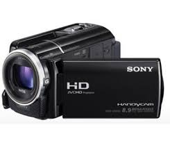

Gracias a su zoom poderoso, puede grabar momentos de cerca, de lejos y a cualquier distancia que
desee.
Entre las nuevas y emocionantes características está el modo de Prioridad en Alta Luminosidad
con corrección de contraluz, para ayudarle a lograr las mejores tomas posibles; además, las opciones
de grabar.
El cuerpo liviano de la VIXIA HF R800 le permite tenerla a mano para grabar lo que desee,
cuando lo desee, en tarjetas SD extraíbles que le facilitan el compartir sus videos de forma rápida y
conveniente. Fácil de usar y de llevarla a todos lados, tome la videocámara VIXIA HF R800 y comience a
crear recuerdos.